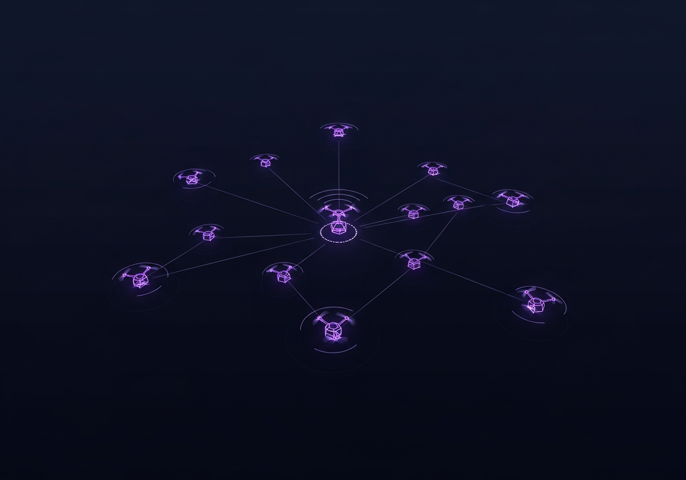

Sparse Multi-Agent AI

The pragmatic test for multi-agent AI is not protocol elegance but what the collective actually achieves: can agents coordinate without communication, evaluate without ground truth, and reason without shared state? This direction studies coordination and reasoning under the strictest informational constraints.

The most constrained case of coordination is when agents cannot communicate at all: no messages, no shared world model, no common prior. Each agent can only observe the outcomes of past collective actions logged in a shared record, not explanations of why those outcomes occurred. Whether meaningful coordination can emerge from that alone is a question about the minimum structure collective intelligence actually needs.
Zero-Knowledge Swarm AI: Drone Coordination Without Communication or Shared State implements this for drone task allocation. Each drone runs an independent policy updated only from observable outcomes in a public log. Coordination emerges from the structure of those outcomes, without any agent knowing what the others are doing or planning.
LLM evaluation normally depends on human-curated benchmarks: fixed sets of questions with correct answers, built slowly and updated rarely. By the time a benchmark is widely used, models have often been trained on data resembling it, and the benchmark no longer tests what it claims to. The dependency on external ground truth is a structural problem, not just a practical inconvenience.
CoEval: Self-Evaluating Model Ensembles removes this dependency. Models rotate through teacher, student, and judge roles, generating challenges and evaluating responses without any external oracle. The benchmarks that emerge capture the specific weaknesses of this ensemble under these conditions at this point in time, including failure modes that fixed benchmarks miss.
When a group of experts disagrees, the useful response is not to average their views but to surface what each is actually reasoning from and where those reasonings diverge. Structured adversarial pressure, rather than consensus-seeking, tends to expose the underlying disagreements that matter. This is especially true when agents have different information and cannot simply inspect each other's internal states.
CoReason: Collaborative Reasoning Framework for Structured Problem-Solving structures iterative critique-and-improvement loops where agents challenge each other's reasoning without access to each other's internal states. The platform is also deployed as a learning environment where students practice reasoning under the same structured adversarial pressure as the agents, with course-integrated assessment and multilingual support.
The question of how agents learn to reason under structured challenge connects directly to how people do. Deliberate practice in high-stakes situations is difficult to arrange in real training contexts: the scenarios are rare, the feedback is slow, and the stakes make repetition impractical. Generative AI can simulate those situations at scale, giving practitioners repeated exposure to the kinds of moments that are most important to get right.
A generative AI-based platform for deliberate teaching practice (2025) applies this logic to teacher preparation. Structured challenge scenarios are generated and evaluated by AI, giving educators repeated practice with difficult classroom situations that are otherwise hard to replicate. The same scaffolding principles that govern the agent reasoning loops in CoReason apply here: structured challenge, explicit feedback, and iteration toward better judgment.